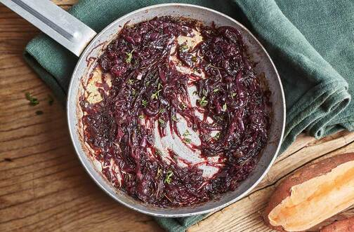

Caramelised Onions

The one and only recipe for caramelised onions that you will ever need!
Ingeridents
- 2tbsp of neutral tastin oil
- 30g of butter
- 2 large onions (yellow or red
- teaspoon of salt
- sugar to taste
Steps
- Peel and cut up the onions to long thin strips
- Heat the oil in a medium sized pan over medium heat
- Once hot, lower the heat to medium low and add the butter
- When the butter is melted, add the onions and the teaspoon of salt
- Stir the onions once in a while to avoid burning and if the pan is too dry, add a tiny splash of water
- After the onions became golden brown, taste them and add sugar if you desire
- Continue stirring the onions till they are done to your liking, for deep caramelisation the estimated time is about 40 to 45 minutes
- Enjoy!
main page